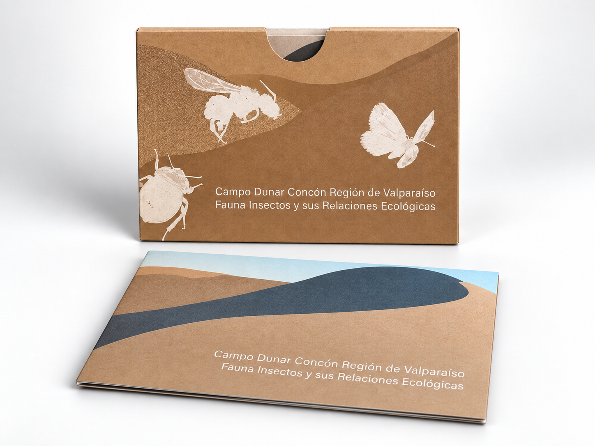
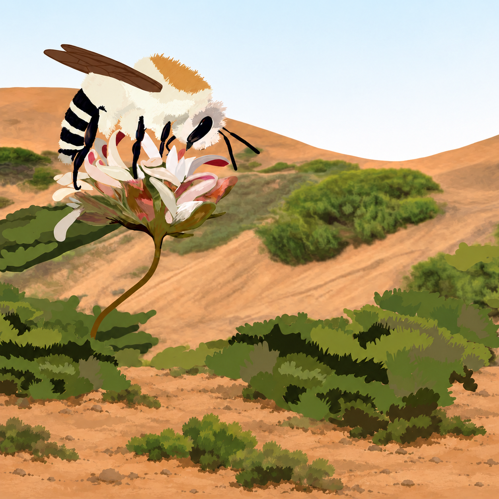
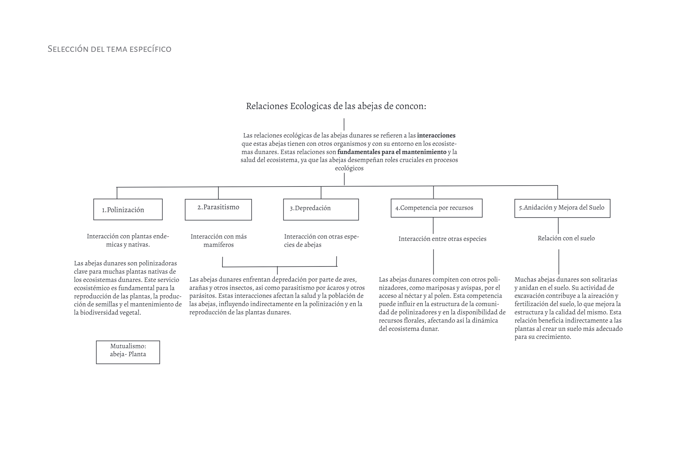
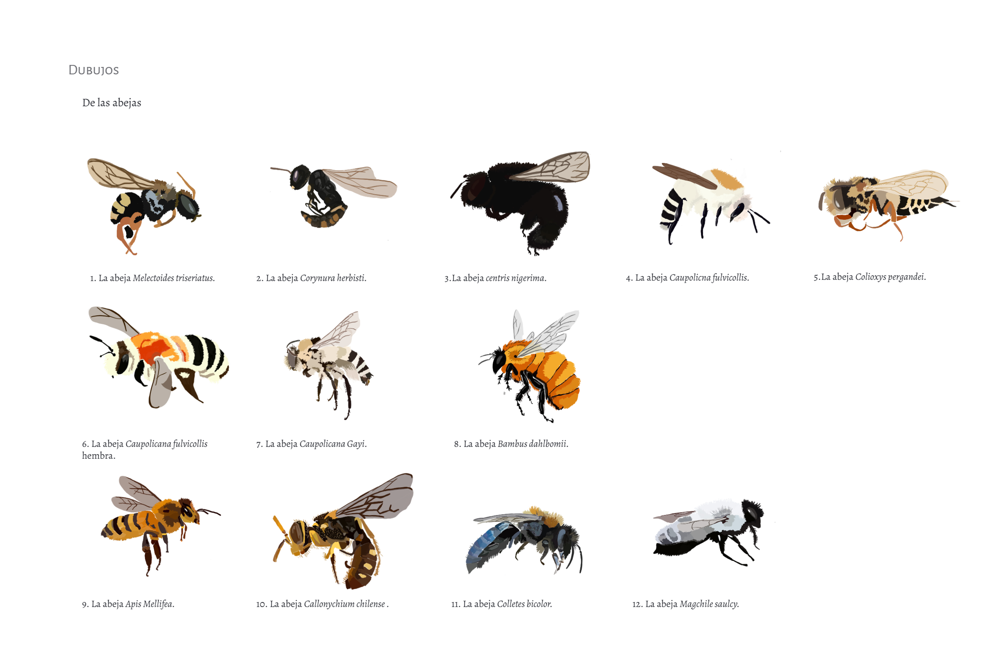
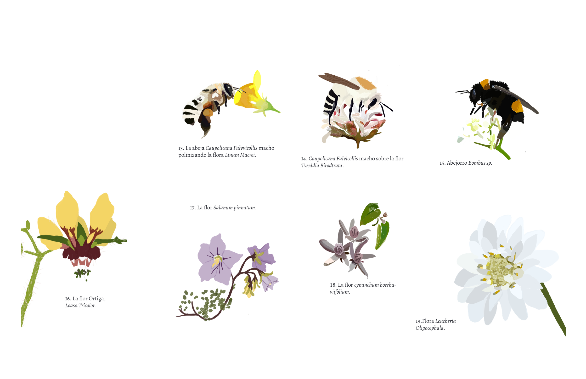
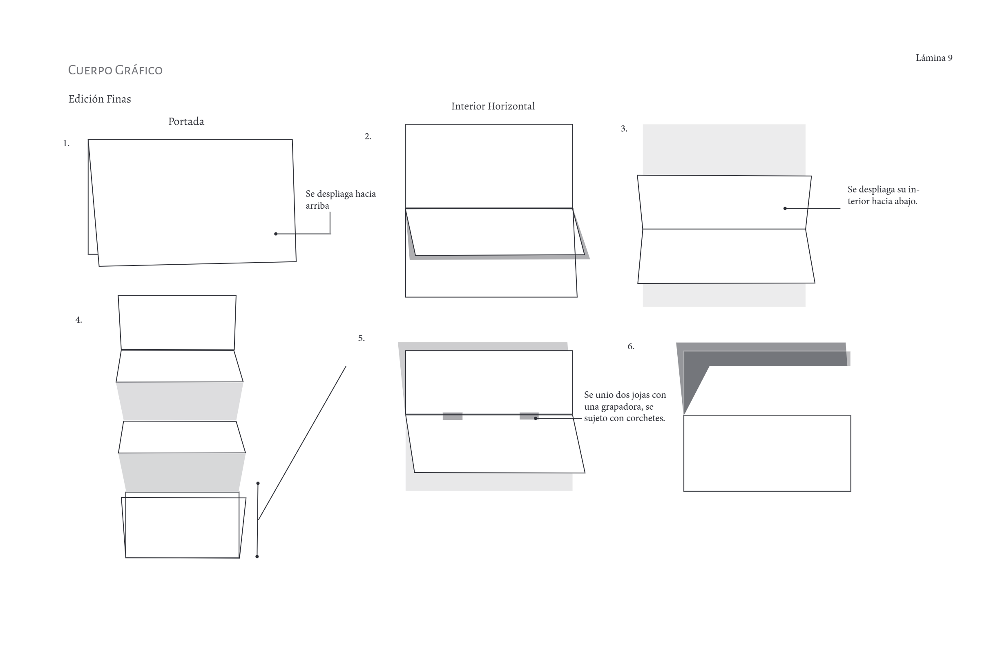
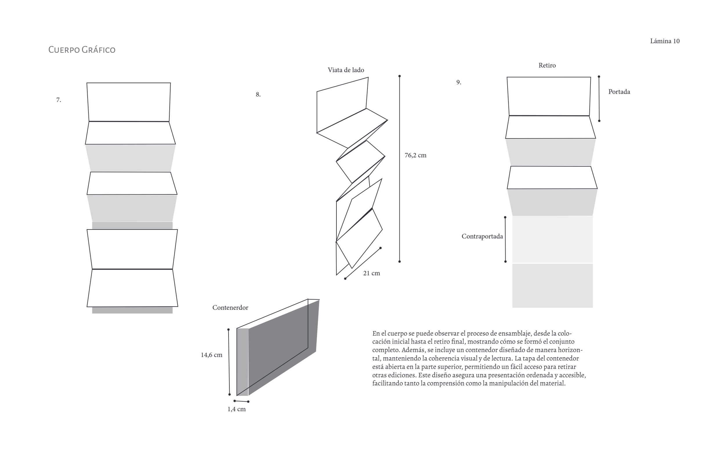
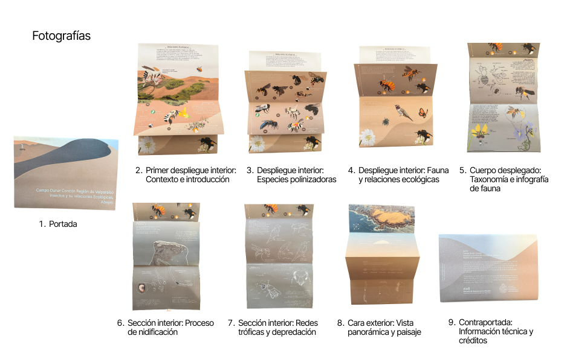

Relaciones ecológicas en el Campo Dunar de Concón

Proyecto editorial e infográfico centrado en visibilizar el rol ecológico de las abejas nativas y su relación simbiótica con la flora del campo dunar de Concón.
A través de ilustración digital detallada y una diagramación secuencial, la pieza traduce dinámicas biológicas complejas, polinización, competencia y anidación subterránea, en una experiencia visual clara y envolvente.

La investigación partió por acotar el tema: las relaciones ecológicas de las abejas nativas de Concón. De ahí salió el esquema que ordena la infografía y, después, el banco de ilustraciones digitales de abejas y flora local.

Los dibujos se realizaron de forma digital utilizando la plataforma Procreate. Se emplearon diferentes colores y pinceles para crear diversas abejas con sus características distintivas. Una vez coloreados, los dibujos se exportaron en formato PNG y se enviaron al computador. Para corregir ciertas imperfecciones, se utilizaron programas como Photoshop o Illustrator, dependiendo de las necesidades específicas de cada imagen. Este proceso permitió mejorar la calidad y precisión de las ilustraciones, asegurando que cada abeja reflejara con exactitud sus características y detalles únicos.

Los dibujos que se muestran en la lámina representan la flora local y su interacción con las abejas, ilustrando el mutualismo que se produce cuando las abejas polinizan estas plantas. Las flores ilustradas son características de las dunas de Concón. A través de estas imágenes, se busca destacar la importancia de las abejas en la polinización y su papel crucial en el ecosistema local. Además, se incluyeron detalles botánicos específicos de cada especie de flor para resaltar la diversidad y riqueza de la flora de esta región.



Nueve momentos de lectura: desde la portada y su estuche hasta la contraportada con la información técnica. El desplegable se puede leer por partes o abrir completo como un mapa de la duna.
